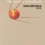

HOT오늘도 글12일 연속
직장인 투자자 타키온으로 소개된 필명입니다. 법적 실명은 미확인입니다.
자산배분·시황을 자주 적어, 인기 있는 개인 투자 기록을 고를 때 쓴다.
국내외 기업과 업종을 해설하는 글
오늘 읽을 글: 주식 블로그, 시황과 가치평가를 나눠 읽는 법
HOT오늘도 글12일 연속
직장인 투자자 타키온으로 소개된 필명입니다. 법적 실명은 미확인입니다.
자산배분·시황을 자주 적어, 인기 있는 개인 투자 기록을 고를 때 쓴다.
HOT오늘도 글10일 연속
주식·채권 등을 다루는 경제 블로거로, 네이버 인플루언서 페이지에 소개되어 있습니다.
거의 매일 시황·종목 해설을 올리는 인기 블로그라, 당일 국내 흐름을 촘촘히 볼 때 쓴다.
HOT오늘도 글16일 연속
국내 증시와 산업을 글로 해설하는 필명입니다. 법적 실명은 미확인입니다.
경제 이슈를 쉬운 말로 빨리 전하는 네임드 블로그. 깊이는 시황 해설보다 얕을 수 있어 입문용으로 둔다.
HOT오늘도 글13일 연속
은퇴·연금 주제를 다루는 블로그입니다. 작성자 실명은 미확인입니다.
연금·실업급여처럼 제도 숫자를 풀어 쓰는 은퇴·현금흐름 관점이 시황 글과 보완된다.
HOT오늘도 글
작성자 실명과 약력은 미확인입니다. 공개 피드와 선정 이유로만 소개합니다.
IPO·딜 소식을 매체 형식으로 전한다. 개인 투자 일기와 역할이 달라 섞어 둔다.
HOT오늘도 글3일 연속
콤디티라는 필명으로 투자 글을 씁니다. 법적 실명은 미확인입니다.
글 빈도가 높아 당일 개인 투자 기록을 고를 때 보탠다. 네임드 규모는 시황 대표 블로그보다 작다.
HOT오늘도 글9일 연속
작성자 실명과 약력은 미확인입니다. 공개 피드와 선정 이유로만 소개합니다.
개인 투자 기록이 꾸준하다. 유명 시황 채널만 모으면 빠지는 일상의 매매 관점을 보충한다.
HOT오늘도 글
작성자 실명과 약력은 미확인입니다. 공개 피드와 선정 이유로만 소개합니다.
AI 인프라·반도체 관련 기업을 공개자료 기준으로 정리해, 테마 제목만 있는 글과 구분된다.
HOT오늘도 글3일 연속
작성자 실명과 약력은 미확인입니다. 공개 피드와 선정 이유로만 소개합니다.
덜 알려진 편에 속하는 분석 블로그를 유명 채널과 섞기 위해 넣었다.
HOT오늘도 글
작성자 실명과 약력은 미확인입니다. 공개 피드와 선정 이유로만 소개합니다.
더따리에서도 추천된 투자 블로그. 매일 글이 확인되어 시황 보조로 넣었다.
HOT
작성자 실명과 약력은 미확인입니다. 공개 피드와 선정 이유로만 소개합니다.
기업분석 전문 블로그로, 유명한 시황 계정과 겹치지 않는 종목 글을 고르기 위해 넣었다.
HOT오늘도 글11일 연속
국내 주식 실전투자 해설로 오래 알려진 필명입니다.
거의 매일 장문 시황을 올리는 대표 블로그라, 메르·염블리와 다른 각도의 당일 해석을 볼 때 쓴다.
HOT오늘도 글12일 연속
재테크·투자 글을 쓰는 필명으로, 공개 블로그와 소개 문서에서 확인됩니다.
글 빈도가 매우 높아, 국내 재테크 시각의 당일 논점을 모을 때 쓴다.
HOT오늘도 글3일 연속
썬플라라는 필명으로 경제·재테크 글을 자주 씁니다. 법적 실명은 미확인입니다.
글 빈도가 매우 높아, 정책·상품·시황을 빠르게 훑을 때 쓴다.
HOT오늘도 글14일 연속
아이언이라는 필명으로 IPO·공모 일정을 자주 정리합니다. 법적 실명은 미확인입니다.
상장·수요예측처럼 일정형 정보를 거의 매일 모아, 기업분석 블로그와 역할을 나눈다.
HOT오늘도 글
증권가 시황 해설로 널리 알려진 인물입니다.
증권가 시황을 매일 풀어 주는 대표적인 해설이라, 오늘의 업종 흐름을 먼저 볼 때 쓴다.
HOT오늘도 글
작성자 실명과 약력은 미확인입니다. 공개 피드와 선정 이유로만 소개합니다.
인문·역사 결의 투자 칼럼이 있어, 리포트 요약형과 결이 다르다.
HOT
작성자 실명과 약력은 미확인입니다. 공개 피드와 선정 이유로만 소개합니다.
개별 기업 분석이 주라, 시황 채널만 볼 때 빠지는 종목 단위 설명을 보완한다.
HOT
작성자 실명과 약력은 미확인입니다. 공개 피드와 선정 이유로만 소개합니다.
오래 쌓인 개인 블로그로 이웃 규모는 크지만, 유명 애널리스트 채널과는 다른 독자 글이다.

일상은 명료하게, 행복은 단순하게작성자 실명과 약력은 미확인입니다. 공개 피드와 선정 이유로만 소개합니다.
투자와 삶의 태도를 같이 적는 에세이형이라, 숫자 나열 글 사이에서 맥락을 고를 때 쓴다.
작성자 실명과 약력은 미확인입니다. 공개 피드와 선정 이유로만 소개합니다.
꾸준한 개인 기록이 확인되어, 입소문만 큰 채널에 기대지 않기 위해 선정했다.
오늘도 글8일 연속
Abnormal Returns 블로그의 저자로 알려져 있습니다.
좋은 투자 글을 가리키는 큐레이션. 본편 해설이 아니라 찾아가기용이다.
오늘도 글
포세이돈이라는 필명으로 시장 전망 글을 씁니다. 법적 실명은 미확인입니다.
당일·주간 시장 대응 글이 자주 나와, 시황 창구를 보탠다.
HOT
투자 기록을 쓰는 블로그입니다. 작성자 실명은 미확인입니다.
최근에도 글이 확인된 개인 투자기록이라, 유명 시황 채널만 볼 때 빠지는 기록을 보충한다.
오늘도 글
회색인간이라는 필명으로 투자 글을 씁니다. 법적 실명은 미확인입니다.
레버리지·수급 논점을 자주 적어, 시황 글과 다른 각도를 보탠다. 제목 톤은 강해 선별해 읽는다.
작성자 실명과 약력은 미확인입니다. 공개 피드와 선정 이유로만 소개합니다.
파생·전업의 무게를 회고체로 적어, 급등 뉴스와 거리를 두고 읽기 좋다.
작은투자자라는 필명으로 기업분석 글을 씁니다. 법적 실명은 미확인입니다.
종목 단위 분석이 있어, 시황형 고빈도 블로그와 역할을 나눈다.
오늘도 글
자산배분·시장 해설 블로그 A Wealth of Common Sense의 저자로 알려져 있습니다.
자산배분과 투자 태도를 쉽게 쓰는 글이라, 국내 일일 시황과 호흡을 나눈다.
제라드라는 필명으로 투자 노트를 씁니다. 법적 실명은 미확인입니다.
증권사 자료 요약형 노트가 있어, 시황 글과 나눠 읽는다.
뉴욕대(NYU) 스턴 경영대학원의 가치평가 교수로 널리 알려져 있습니다.
가치평가 가정을 공개해 쓰는 대표 블로그. 시황 글과 질문을 달리 하려고 넣었다.
Of Dollars And Data 블로그의 저자로 알려져 있습니다.
데이터로 개인 투자 습관을 풀어, 종목 해설 블로그와 보완된다.
이 포스팅은 카카오뱅크로부터 원고료를 제공받아 작성했습니다. 국내 장기 체류 외국인(91일 이상)은 200만명을 넘어서 매년 증가 추세이다. 한국에 장기 거주중인 외국인이라면 은행 업무도 일상에서 빼 놓을 수 없다. 요즘은 스마트폰 하나로 은행 업무를 해결하는 게 워…
누적 매출 80억, 로열티 기대치 밑돌 전망…사측 "미국 개발 늦어도 내년 초 시동" 비보존그룹이 야심차게 선보인 비마약성 진통제 신약 ‘어나프라주’의 국내 성적표가 기대에 미치지 못하고 있습니다. 어나프라주의 성장성을 입증하고 그 밸류(가치)를 바탕으로 신규 투자를…
주식서 1802억원 벌어 순익 견인…채권 교체로 보유이원도 개선 주요 손해보험사의 투자이익이 감소한 가운데 재보험사인 코리안리는 주식 운용 성과에 힘입어 순이익을 끌어올렸습니다. 코스피 강세 속에 보유 주식 평가이익과 매매차익이 늘면서 보험손익이 정체된 상황에서도 순…
한국에서 생활하는 외국인도 이제 카카오뱅크에서 통장을 만들 수 있다. 은행에 방문하지 않고 앱으로 계좌를 개설하고, 체크카드와 모임통장, 세이프박스 등 금융상품 및 서비스를 이용할 수 있다. 눈여겨볼 부분은 가입 혜택뿐 아니라 한국 생활에 맞춘 편의 기능이다. 통장…
5300억 규모 PF 약정 체결…군산 이어 인천에서 '맞손' 현대엔지니어링이 시공하고 KT클라우드가 운영을 맡는 인천 원창동 데이터센터 사업이 프로젝트파이낸싱(PF) 자금 조달에 성공했습니다. 현대엔지니어링은 올해 데이터센터 사업에 본격 진출한 이후 군산에 이어 인천…
장 끝나고 상한가(하루에 오를 수 있는 끝인 +30%까지 간 것) 목록 내려보다가 아침에 분명 봤던 종목이 거기 떡하니 있으면 속이 쓰리다. 그 쓰린 속으로 저녁 먹다 보면 내일 아침 장 열리자마자, 시초가에라도 올라탈까 하는 생각이 슬금슬금 든다 이만큼 끌어올린 세…
호주 광산 엑시트 마무리·인니 발전소 지분 일부 매각…니켈·재생에너지 투자 확대 LX그룹 산하 종합상사인 LX인터내셔널이 해외 투자자산을 잇달아 현금화하며 미래 성장사업을 위한 투자 재원 확보에 속도를 내고 있습니다. 지난해 호주 엔샴 유연탄 광산 지분을 전량 매각한…
중국집에 가면 매번 하는 고민이 있다. 짜장면이냐 짬뽕이냐 메뉴판 앞에서 한참 버티다 결국 하나를 고른다. 맛있게 먹으면서도 다른 메뉴를 시킬 걸 그랬냐며 후회하기도 한다. 요즘 주식 시장도 비슷하다. 젠슨황 복귀로 슬슬 바닥을 찍은 삼전닉스다. 그런데 둘다 좋아 보…
김하수 부사장, RTS TF 팀장 겸임…전사 혁신 조직 구축 GS건설이 전사 혁신 프로그램을 추진하는 ‘RTS 태스크포스(TF)’에 건축·주택 부문 임원들을 배치했습니다. 올해 2분기 최고혁신·리스크관리책임자(CTRO) 직책을 신설한 데 이어 3분기에는 RTS TF를…
26일까지 '한글 2018'~최신 버전 순차 업데이트…기존 HWP 원본 그대로 일괄 변환 국가표준 OWPML 기반 데이터화·행정 시스템 연계 지원…'AI 시대 핵심 자산' 구축 한글과컴퓨터가 공공기관용 '한글'의 기본 저장 형식을 개방형 표준인 HWPX로 전환한다고…
미국 샌프란시스코 아시아미술관 소장 희귀 유산 국내 반입…2028년 보존 완료 후 공개 민간 최초 누적 후원금 100억 돌파 이어 조선시대 넘어 고려 유산까지 보호 영역 확대 라이엇 게임즈가 미국 샌프란시스코 아시아미술관(AAM)이 소장한 14세기 고려시대 불화 '아…
약식 공시·냉각기간 면제에 쪼개기 매수까지…사전공시 묶인 조원태와 '기울어진 운동장' 호반그룹이 한진칼 최대주주에 오른 뒤에도 지분 보유목적을 '단순투자'로 유지하고 있습니다. 단순투자 주주는 약식으로 보고하고 추가 매수 제한도 받지 않는 데다, 계열사로 나눠 사면…
‘일본 롯데 영향권’ 호텔롯데·롯데물산, 안정적 자금 바탕 그룹 계열 지원 전면에 롯데지주의 재무여력이 빠듯해지면서 최근 몇 년 사이 그룹 계열사 자금 지원을 일본 롯데 측 자본이 메우는 장면이 이어지고 있습니다. 신사업인 바이오와 핵심 자회사인 화학 지원은 물론 지…
종영 '닥터X' 7.3% vs 급등 '100일의 거짓말' 7.1%…0.2%p 차 초박빙 접전 KBS 주말극 '사랑이 온다' 3위·사극 '문무' 8위…MBC '라이어' 등 20위권 신규 진입 SBS 금토 드라마 '닥터X: 하얀 마피아의 시대'가 2개월 연속 한국인이 가…
니요 내한으로 입증한 팬덤 밸류체인…비마이프렌즈, 그룹 시너지 본격화 킬링보이스 280만 뷰 흥행 이어 플로·비스테이지 팬 유입 선순환 구축 글로벌 팬덤 비즈니스 기업 비마이프렌즈가 그룹 계열사 역량을 결집해 해외 지식재산권(IP)의 아시아 시장 진출을 지원하는 통합…
선행으로 해먹었는데 추징은 또 안하네 '3만명 텔레그램 주식방' 운영하며 선행매매…핀플루언서 1심서 징역 2년 6개월 종목 305개 미리 사들이고 추천 글 388회 게시 法 "시장에 대한 신뢰를 해하는 행위" 부당이득 규모 특정 어려워 추징은 안 해 이씨는 2018년…
사전예약 100만 돌파 '귀혼키우기' 출격…엠게임, 원작 IP 신작 공세 2005년 대표작 '귀혼' 세계관·무공 계승…스테이지 공략형 간편 육성 도입 엠게임이 자체 개발한 무협 방치형 역할수행게임(RPG) '귀혼키우기'를 24일 오후 1시 정식 출시했습니다. 서비스…
위메이드플레이 자회사 플레이링스, 서브컬처 신작 '소울시프트'로 한·일·대만 공략 여대생 된 남학생의 이세계 학원물…웹툰형 스토리와 방치형 성장 결합 플레이링스가 신작 모바일게임 '소울시프트 리:본(SOULSHIFT RE:BORN, 이하 소울시프트)'을 한국과 일본,…
이청준의 소설이다. 오늘 신문을 읽다 보니 저 소설이 생각났다.
제작비 62% 인건비, 정부 세제개편안 또 제외…1만5000명 취업자 증가 효과 추산 게임업계가 구조조정으로 인력을 줄이는 동안 고용 확대를 위한 세제 지원 논의는 제자리걸음하고 있습니다. 영화·방송·애니메이션과 웹툰은 제작비 세액공제를 받지만 게임은 올해 정부 세제…
3분기 흑자전환에도 누적 손실 확대…투자주식 4783억 손상·미래 이익률 전망 하향 하이브의 미국사업이 외형 성장에도 좀처럼 투자 성과를 입증하지 못하고 있습니다. 올해 3분기 매출이 전년 동기보다 3배 이상 늘고 순이익도 흑자로 돌아섰지만, 누적 적자는 오히려 확대…
젠슨 황 복귀로 오늘 시장이 뜨겁다. 젠슨 복귀는 미국이 AI 패권을 중국에 넘겨줄 수 없다는 것이다. 젠슨이 미국 AI 산업을 이끌고 있는데 그가 사라지면 미국의 AI 밸류체인은 혼돈 속으로 빠져들고 중국에 밀릴 수 있다는 위기의식 때문에 그를 복귀시킨 것이다. 그…
10년 넘게 내부 후보군 관리에도 역대 회장 8명 중 6명 관료 출신…외부 후보 검증 과정 '깜깜이' NH농협금융지주가 10년 넘게 회장 후보를 내부에서 관리해 왔지만 정작 회장 자리는 외부 인사에게 돌아가는 일이 반복되고 있습니다. 지주 출범 이후 역대 회장 8명…
최근 KB에서 노후 관련 분석 자료를 보니 재미있는 게 좀 있네요 젊을 수록 은퇴하고 싶어하고 늙을수록 일하고 싶어한다. 희망 은퇴 나이를 보면, 20~40대의 경우 61세 ~ 64세 정도 됩니다. 그리고 50대 부터는 60대 중반으로 늘어나고 60대 부터는 70살…
정부, 10조7600억 규모 증안펀드 가동 채비…수급 개선·투자심리 안정 기대 정부가 증권시장안정펀드(증안펀드) 가동 준비에 착수한 것을 두고 증시의 급격한 하락세를 진정시키는 데 도움이 될 것이라는 평가가 나옵니다. 실제 자금 투입이 이뤄지지 않더라도 정부가 시장…
한투운용, AI 밸류체인 TDF로 연금시장 공략…산업 주도권 변화에 맞춰 투자 한국투자신탁운용이 인공지능(AI) 산업에 집중 투자하는 타깃데이트펀드(TDF)를 앞세워 연금시장 공략에 나섰습니다. 최근 AI 관련주가 조정을 받고 있지만 기술 혁신에 따른 장기 성장성은…
다음주면 바로 12월, 2026년 연말이다. 연말이 다가오면서 혹시나 내년에 내야 하는 세금이 없을지 둘러보고 있다. 그 중에서도 해외주식을 하는 사람이라면 양도소득세를 고려하면서 투자할 수 밖에 없다. 미국주식을 시작한 지 얼마 되지 않아, 모르는 사람들도 있을텐데…
#트럼프 #이재명 #김정은 #미국 #한국 #북한 #지정학 #APEC #깜짝회동 #정동영 #이종석 #통일부 #국정원 #강금실 #위성락 #자주파 #동맹파 #G20 #마이애미 #살라미전술 지난 선전 APEC에서 끝내 불발되었던 트럼프와 김정은의 회동. 그 이면에 숨겨진 막…
나도 공부하려고 정리하는거지 매수/매도 추천 아님 통신도 싸이클 산업인데 통신사들의 신규 대역 도입, 커버리지 및 용량 확대가 통신 장비사들에게는 싸이클이다. 2027년에는 미국 어퍼 C밴드 경매와 스페이스X 지상망 구축이라는 별개의 투자 동력이 존재한다. 스페이스X…
어느새 임신 33주 진입! 초기, 중기, 후기까지 지나오면서 차근차근 준비해야 하는 것들을 하고 있다. 필요용품들을 준비하면서 가장 큰 고민을 했던 것이 있다. 바로 가습기! 가습기 종류도 꽤 많고, 집에서 신생아 아기랑 같이 있을 생각에 더욱 까다롭게 알아봤었다.…
선공급 후계약 관행에 사용료 갈등 장기화…법원, 24일 가처분 심문 진행 예정 CJ ENM이 신청한 LG헬로비전 4개 채널 송출 중단 금지 가처분 심문이 송출 종료 예정일을 이틀 앞둔 24일 열릴 예정입니다. 업계에서는 사용료가 확정되지 않은 상태에서 콘텐츠 공급이…
2026년이 저물고 있다. 이제 한 달만 있으면 2027년 양의 해 정미년이 시작된다. 오늘 간밤에 있었던 엔비디아 젠슨황의 복귀. 그리고 코스피 매수 사이드카. 오늘 오전치를 포함하면 올해만 100번의 사이드카가 걸렸다고 한다. 미장이든 국장이든 한치앞을 예상할 수…
그룹 유동성 1조7300억 확보, 롯데케미칼은 8000억 상환 롯데그룹이 그룹의 상징적 자산인 롯데월드타워에 설정된 담보를 해지했습니다. 롯데케미칼의 공모 회사채에 기한이익상실(EOD)이 발생하면서 담보로 제공한 지 2년 만입니다. 롯데지주는 롯데월드타워가 4대 시중…
美 '병원·암연구소' 거친 의사과학자 라파엘 베하르 박사 합류…글로벌 역량 강화 기대 한미약품이 자체 개발 중인 항암 신약 후보물질 ‘투스페티닙’의 글로벌 개발을 주도했던 미국 항암 전문가인 라파엘 베하르 박사를 전격 영입했습니다. 회사는 미국 주요 병원과 암 연구소…
한국항공우주산업(KAI)이 지난 19일 대구경북과학기술원(DGIST), 20일 울산과학기술원(UNIST)과 각각 미래 항공우주 분야 전문인재 양성과 공동연구 활성화를 위한 ‘항공우주산학협력협약(MOU)’을 체결했다고 23일 밝혔습니다. KAI와 각 과학기술원은 ▲미래…
디지털자산 거래소 업비트를 운영하는 두나무가 지난 20일 정부과천청사에서 서울지방중소벤처기업청(청장 김우순), 소상공인시장진흥공단 서울지역본부와 함께 ‘2026년 전통시장 디지털 혁신 아이디어 공모전’ 시상식을 성공적으로 개최했다고 23일 밝혔습니다. 이날 시상식에는…
최대주주 측에 구속력 있는 합의·공시 요구…SI 유치 시 이사진 재신임도 수용 오스코텍 현 경영진이 최대주주 측에 일반주주의 동등한 주식 매도 기회를 보장하는 합의를 요구하며 초다수결의제 폐지에 조건부 찬성 입장을 밝혔습니다. 최대주주와 2대주주가 향후 보유 지분을…
최태원 법률대리인 "경영에 전념에 국가경제 발전에 기여하겠다는 뜻" 최태원 SK그룹 회장이 노소영 아트센터 나비 관장과의 재산분할 소송 재상고심 재판부에게 화해권고 결정을 내려달라고 요청했습니다. 앞서 7월 파기환송심에서 책정한 재산분할금 9440억원도 전액 지급하겠…
상무 승진 5명 중 4명 제주항공 애경그룹이 사장단을 유임하는 동시에 계열사별 차세대 리더를 발탁하는 2027년 정기 임원인사를 단행했습니다. 애경그룹은 23일 사장 승진 1명, 부사장 승진 1명, 전무 승진 2명, 상무 승진 5명, 상무보 신규선임 4명 등 총 13…
최진원, DX 경영지원담당에서 글로벌리서치 재무전략담당으로 김원준 삼성글로벌리서치 대표이사 부사장과 최진원 삼성전자 디바이스경험(DX)부문 경영지원담당 재경팀 부사장이 사장으로 승진했습니다. 김 사장은 대표이사직을 그대로 맡으며 최 사장은 삼성글로벌리서치 재무전략담당…
스타링크가 휴대폰 요금제를 대신할 수 있을까요? 일론 머스크가 또 한 번 통신업계를 흔들었습니다. 스페이스X가 약 170억 달러(약 23조 6천억 원)를 들여 확보한 주파수로, 위성에서 스마트폰으로 직접 영상을 보는 시대를 예고했거든요. 지난 9월 미국에서 열린 올인…
예전에 만났던 여자친구가 있었다. 기분이 날씨처럼 바뀌는 사람이었다. 아침에는 세상 다 가진 것처럼 웃다가 저녁이 되면 갑자기 먹구름이 꼈다. 무슨 일 있냐고 물으면 별일 아니라고 했다. 그런데 얼굴은 전혀 괜찮아 보이지 않았다. 그때 제일 어려웠던 게 말과 행동이었…
3분기 발생손해액 540억 감소에도 사업비 111억 증가…삼성화재·DB손보 추월 현대해상의 자동차보험 수익이 삼성화재의 70%에도 못 미치지만, 계약 확보에 쓴 현금은 더 많은 것으로 나타났습니다. 지난해 1\~9월 삼성화재·DB손해보험을 밑돌던 현대해상의 계약 확보…
고형암·림프종 환자 146명 모집…승인일로부터 3년간 진행 에임드바이오가 미국에서 항체약물접합체(ADC) 기반 항암 신약 후보물질 'AMB303'의 대규모 장기 임상 1상 진입을 시도합니다. 고형암과 림프종 환자를 대상으로 향후 3년간 약 150명을 모집해 약물의 내…
더캐리, 의류·잡화 생산 맡기며 계약서 30건 지연 발급…376건은 대금 조건 누락 유·아동복 브랜드 ‘베베드피노’와 ‘아이스비스킷’을 운영하며 월트디즈니를 비롯해 이스트팩, 산리오 등 해외 유명 브랜드와 협업해 온 더캐리가 협력사에 의류와 잡화 생산을 맡기면서 대금…
글로벌 투자사 참여…2027년 상반기 코스닥 상장 목표 큐어버스가 국내외 투자기관으로부터 약 230억원 규모의 상장 전 지분투자(프리IPO)를 유치했습니다. 특히 유럽 생명과학 전문 투자사 쿠르마파트너스와 글로벌 헬스케어 투자사 하이라이트캐피탈이 신규 참여하며 투자자…
성과·역량 중심 인사 단행…변화와 혁신을 주도할 차세대 리더 발탁 애경그룹은 사장 승진 1명, 부사장 승진 1명, 전무 승진 2명, 상무 승진 5명, 상무보 신규 선임 4명 등 총 13명에 대한 2027년 임원 인사를 단행했다고 23일 밝혔습니다. 임원 선임 및 승진…
중수처리시설 천공 작업 중 피트로 추락…노동부, 부분 작업중지 명령 DL이앤씨는 국립새만금수목원 조성사업 현장에서 추락 사고로 근로자 1명이 사망했다고 23일 공시했습니다. 공시에 따르면 사고는 지난 20일 현장 내 중수처리시설에서 발생했습니다. 근로자는 기계설비 기…
향후 4년 누적 손익 전망 3.2조 상향…보증 잔액 61.3조 유지·추가 수익 1.7조 확보 추진 신용보증기금이 향후 4년간 2조8000억원대 적자를 예상했던 재무 전망을 흑자로 뒤집었습니다. 그러나 재무 부담을 줄이기 위해 보증 규모를 축소하려던 기존 계획은 접었습…
지난주 폭락의 절반을 하루에 되돌렸다. 반도체지수 14%·SK하이닉스 ADR 20% 급등, 다만 2년물 금리는 ‘연준 추가 인상’ 쪽으로 움직였다 뉴욕 증시 주요 지수 등락률 ▍1. 한 사람의 귀환, 지난주 폭락의 절반을 되돌렸다 23일 뉴욕증시는 한 사람의 복귀에…
젠슨 황 CEO가 한국시간으로 어제 밤에 엔비디아에 복귀했다. 그렇게 젠슨 황의 복귀를 반대했던 이사회가 하루만에 말을 바꾼 것이다. 심지어 만장일치로 의결을 했는데, 바탕에는 "미정부 고위급의 의견"때문이라고 한다. (트럼프 대통령이 본인이 직접 엔비디아 이사회를…
안녕하세요, 공돌이아재 타키온 블로그 입니다. 월말이 다가오면 월구독 연말이 다가오면 연구독 뭐 이런게 있나 봅니다. 유료투자방? 뭐 한달 한분기 1년치 구독료를 지불하고 방장(주인장)이 보내주는 글 읽고 뭐 그런 것 같습니다. 3년전에도 글을 한번 썼었는데요. 제…
11월 19일, 앤트로픽이 뉴욕증시에 상장했다. 첫날 주가는 공모가보다 17% 넘게 올랐다. 이튿날 신문은 앤트로픽이 시가총액 1조 2,710억 달러로 세계 12위에 올랐다고 썼다. 그런데 그 숫자 앞에 작은 괄호가 하나 붙어 있었다. 시가총액(발행주식 기준). 기준…
자산투자 성공의 왕도는 경제순환을 기반으로 금리와 물가, 환율 등 길목지표를 매일 모니터링하여 주식과 채권, 부동산, 원자재 등 자산 가치를 꿰뚫어 보고 싸게 사서 비싸게 파는 통찰을 체득해 나가는 것입니다. 2026년 11월 24일 (화) 오늘의 주요 경제 이슈는…
샘 올트먼도 쫓겨났다가 돌아왔다. 조금 멀리 가보면 스티브 잡스도 비슷한 경험이 있다. 물론 세 사람의 상황이 같지는 않다. 그런데 이들의 이야기를 보면서 새삼 느끼는 게 있다. 기업이라는 게 결국 사람이 하는 일이라는 것이다. 젠슨 황은 11일 만에 엔비디아로 돌아…
월급보다 실업급여 하한액이 더 많다는 도무지 이해가 안되는 계산이 나오는데, 이게 팩트라는 사실이 놀라울 따름입니다. 우선 실업급여를 보면, 하한액 기준 30일치를 받으면 198만원쯤 됩니다. 하한액의 경우 최저시급 X 80% X 1일 소정 근로시간 (8시간)으로 계…
거래소 조회공시 요구에 답변…사채권자집회·법원 인가 거쳐 조건 확정 엔켐은 제14회 전환사채(공모)와 관련한 한국거래소의 조회공시 요구에 대해 현재까지 사채권자로부터 기한이익상실 통지를 받은 사실이 없다고 23일 밝혔습니다. 한국거래소는 지난 20일 엔켐 상장채권인…
안녕하세요, 공돌이아재 타키온 블로그 입니다. 1. 11월 3주차는 최악의 증시였습니다. 나스닥이 일주일에 -10% 하락했거든요. 한달 일년 이런게 아니라 단 5일! 일주일입니다. 2. 2000년대 이후만 보더라도 역사적으로 나스닥이 일주일에 10% 이상 하락한 사례…
Strategy What downturns can teach us. (fortunesandfrictions.com) Risk cuts both ways. (awealthofcommonsense.com) Nvidia Jensen is back at Nvidia ($NV…
얼마 전에도 세금 고지서를 받은 것 같은데, 또 고지서가 날라온다. 이처럼 우리는 세금을 잘 내고 있는데, 막상 대출을 하거나 갑자기 지방세 납세증명서를 제출하라는 경우가 있다. 금융기관이라면 알아서 확인이 가능한 건 아닌가 싶은데 제출을 하라고 하니 당황스럽기도 하…
미국 마감시황 반도체 투매로 미 증시 급락. 필반지수 폭락. 금리 급락 트렌드포스, 내년 낸드값 하락 전망 > 현재는 현물가 하락, 장기계약 거래가는 상승중 나스닥, 고점대비 20% 하락. 지수, 기술적으로 위험신호, 200일 이동평균선 깨짐 금리인상으로 금 폭락.…
Mondays are all about financial adviser-related links here at Abnormal Returns. You can check out last week’s links including a look at...
이름·계좌번호·주소·연락처·운전면허번호 등 13개 항목…"유사 사례 재발하지 않도록 할 것" 최근 금융권에서 해킹 사고가 잇따르는 가운데 증권업계에서도 개인정보 유출 사고가 다시 발생했습니다. 대신증권과 미래에셋증권에 이어 삼성증권에서도 고객의 소리(VOS)에 민원을…
일단 젠슨 황은 언더테이커 마냥 관뚜껑 열고 살아돌아왔다 장이 이러면 진짜 이게 바카라지 투자인가 싶은 생각이 든다. 이런 변동성은 26년이 정말 특별하게 미친 한해니까 그런거겠지 생각해야지 매년 이렇다면 투자를 업으로 삼으면 단명하겠다 싶다. 위아래 극심한 출렁임이…
와.. 이게 무슨 일이야... 일 하고 있는데 갑자기 카톡방들이 난리가 났다 ㄷㄷ 엔비디아 소식이 여기저기서 터져나오기 시작하면서 엔비디아가 프리장에서 불기둥을 뿜어버림. 이 불기둥은 정규장이 시작되고도 계속되고 있다. 엔비디아가 하루만에 30% 급등이라니, 트럼프도…
엔비디아 이사회에서 만장일치로 젠슨 황 CEO 확정했다. 트럼프도 환영. 나스닥 5%대 상승. 다행이다. 엔비디아 일봉차트 젠슨 황 복귀는 확정이다. 엔비디아 이사회가 만장일치로 사장·CEO·이사 복귀를 의결했고, 즉시 효력이 발생했다. 미국 증권거래위원회(SEC)…
아니 할 일이 있어서 평소보다 잠을 늦게 자게 되었는데; 대박 소식 젠슨황이 다시 엔비디아 CEO로 복귀한다는 소식ㄷㄷ 엔비디아 주가는 프리장에서 30% 이상 오르는 모습을 보였는데... 설마 뻥인가 싶어 이리저리 찾아봤는데 정말이다. 젠슨황 엔비디아 CEO 복귀한다…
노후준비를 위해서는 총 4개의 통장이 필요하다. 연금저축, 연금저축2, IRP, ISA계좌 이렇게인데, 아마도 대부분의 투자자들은 다 알고 있는 내용일 것이다. 그런데 왜 연금저축계좌는 2개나 필요할까? 연금저축, IRP, ISA계좌 일단 연금저축계좌와 IRP는 세액…
젠슨 황 형 복귀 소식에 프리마켓 급등중 장 시작하고 ~ 끝나봐야 알겠지만 아직까지는 다들 환호성 일희일비 안하기로 했는데 나도 모르게 거울 보니 웃고 있었다 ㅡ_ㅡ; ㅎㅎㅎ 좋은걸 어떻게! +.+ 젭알 이대로 쭈~~~~~~~~~~~~~~~욱 해치웠나? -------…
안녕하세요, 공돌이아재 타키온 블로그 입니다. 우울증에 걸린 미국주식을 구하러 다시 돌아왔습니다 ㅎㄷㄷ 엔비디아 젠슨황 CEO 복귀 했습니다. 구라 아닙니다. 진짜 확인해보니까 엔비디아 홈페이지에 떴습니다. 요약하면, 지금 당장 젠슨황 엔비디아 CEO 복귀! 즉시 효…
일본 매출 전년比 18%↓…"사업 모델 확장 필요" 네이버웹툰의 일본 사업이 유료 이용자 감소로 매출 역성장을 겪고 있습니다. 한국에서는 유료 콘텐츠 매출이 성장했지만 일본 시장의 부진을 상쇄하지 못했습니다. 일본 디지털 만화시장의 성장 둔화와 오리지널 콘텐츠 부족이…
이브이첨단소재 투자 기업…PIPE 투자의향서 확보·12월 SPAC 합병 완료 목표 이브이첨단소재가 투자한 대만 차세대 배터리 기업 프로로지움(ProLogium)이 나스닥 상장을 추진하는 가운데 최대 1억3500만달러 규모의 PIPE(상장기업 사모투자) 투자 유치 절차…
은행연합회장 자질로 전문성·소통·대외활동 강조…퇴임 앞두고 '기본·변화·포용' 언급 조용병 은행연합회장이 차기 회장 후보로 낙점된 박종복 전 SC제일은행장에 대해 "훌륭한 분이 선출됐다"며 긍정적인 평가를 내놨습니다. 차기 회장이 갖춰야 할 핵심 자질로는 전문성과 소…
On today’s Talk Your Book we speak with Dave Hammer from PIMCO ETFs about investing in municipal bonds, today’s yield levels, where the money comes f…
엔트로픽 IPO 차익실현·금리압박·AI 수익성 우려 겹쳐…데이터센터 신규 발주 둔화 우려 미국의 AI 기업들이 사상 최대 실적과 대규모 투자 계획을 내놓고도 대규모 증시 폭락을 막지 못했습니다. 막대한 AI 투자금을 회수할 수 있느냐는 의문이 커진 탓입니다. 한국 반…
엔비디아 사태 이후 AI 주도권 재편 시나리오 ① 젠슨 황 사임과 SEC 회계조사로 엔비디아가 흔들리면서, AI 주도권이 GPU를 파는 쪽(엔비디아)에서 GPU를 사서 쓰는 쪽(구글·MS·아마존·메타)으로 넘어갈 수 있다는 시나리오가 등장하고 있다. ② 엔비디아의 보…
한국투자공사(KIC)가 신임 투자운용부문장(CIO)에 신민식 전 한화생명보험 투자부문 CIO를, 경영관리부문장(COO)에 신용선 대체투자본부장을 선임했다고 23일 밝혔습니다. 신민식 신임 CIO는 이훈 전 CIO의 후임이며, 신용선 신임 COO는 이상민 전 COO의…
케이엠에프 24~25일·에이엔에이치스트럭쳐 27~30일 개인 대상 일반청약 진행 11월 넷째주(23~27일) 기업공개(IPO) 시장에서는 엠비디가 코스닥 시장에 상장합니다. 이노보테라퓨틱스와 마더스제약 등 2개 기업은 기관투자가 대상 수요예측에 나섭니다. 일반투자자…
오늘 카페에서 있었던 일이다. 다들 폭락한 코스피 이야기가 한창이었다. 바로 옆 테이블 두 사람은 휴대폰을 보며 한숨을 쉬고 있었다. 한 명이 말했다. 이제 반도체는 끝이라고. 지금 화자되는 온갖 악재에 대해 열을 올리고 있었다. 다른 한 명은 말없이 고개만 끄덕였다…
LS전선은 미국 법인을 통해 뉴욕 ‘프로펠 뉴욕 에너지’ 사업에 약 7,000억원 규모의 345kV 초고압 해저·지중케이블을 공급한다고 23일 밝혔습니다. 뉴욕전력청(NYPA)과 송전망 개발·운영사 뉴욕 트랜스코가 공동 추진하는 이번 사업은 롱아일랜드와 뉴욕시 퀸스·…